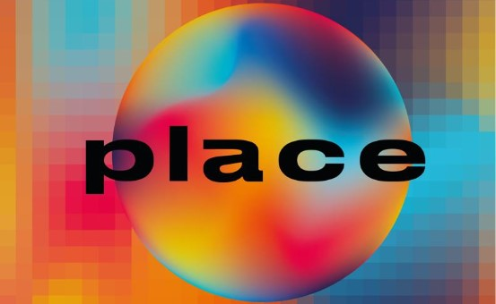

DCCPlace
Python-based, near identical emulation of Reddit’s /r/place event, achieved through Telegram user interactions with the "DCCPlace" bot, aimed towards PUC’s CS Student community. Handled almost 2000 user interactions within 1 hour of public release!
